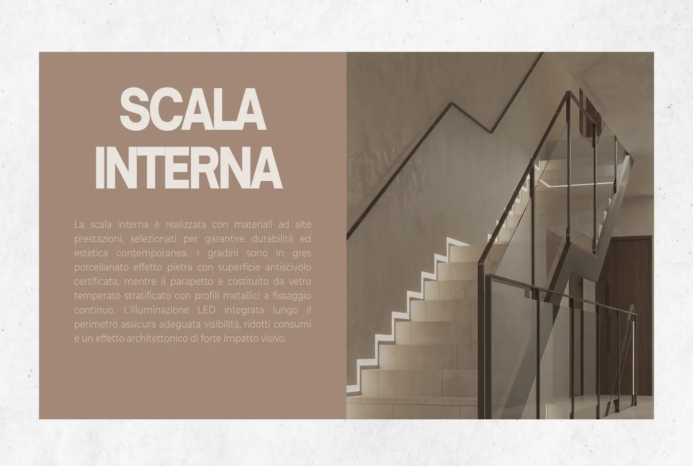
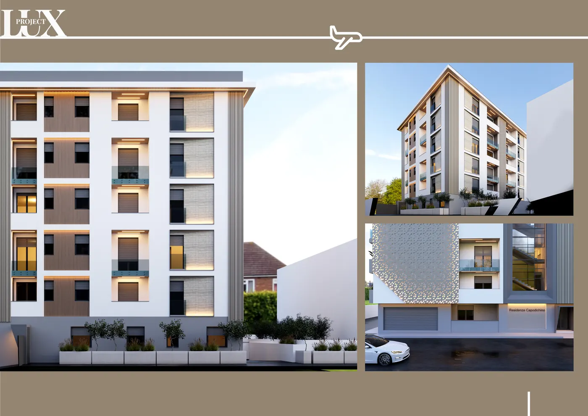

La qualità nasce dalle fondamenta
Ogni dettaglio ha uno scopo
Ogni progetto Lux Project prende forma attraverso una progettazione accurata, materiali selezionati e tecnologie costruttive all'avanguardia.
La qualità nasce dalle fondamenta
Ogni progetto prende forma attraverso una progettazione accurata, materiali selezionati e tecnologie costruttive all'avanguardia.
Materiali selezionati
Scegliamo esclusivamente materiali in grado di garantire affidabilità nel tempo, elevate prestazioni, eleganza e cura estetica, massima durata. Legno, travertino, ceramiche di pregio e finiture di alta qualità.
Tecnologia al servizio del comfort
Le nostre costruzioni integrano tecniche costruttive evolute, domotica intelligente e isolamento termo-acustico avanzato, per offrirti una casa più confortevole, sicura ed efficiente.
La differenza è nei dettagli
Ogni ambiente viene rifinito con la massima attenzione. Materiali, proporzioni e finiture sono studiati per creare spazi eleganti, funzionali e destinati a durare nel tempo.
Costruire bene significa costruire per il futuro
Progettiamo edifici pensati per offrire comfort, efficienza e rispetto per l'ambiente: minori dispersioni termiche, elevato isolamento termo-acustico e consumi energetici ridotti, per il benessere abitativo in ogni stagione.
Una casa che parla di te
Durante la costruzione è possibile personalizzare numerosi aspetti dell'abitazione: distribuzione degli ambienti, materiali e finiture, pavimenti e rivestimenti, dettagli e soluzioni personalizzate.
Non costruiamo semplicemente edifici
Realizziamo spazi destinati ad accogliere il futuro di chi li vivrà. Lux Project: qualità, eleganza e valore che durano nel tempo.

Materiali ad alte prestazioni, anche nei dettagli meno visibili
I gradini sono in gres porcellanato effetto pietra con superficie antiscivolo certificata, mentre il parapetto è costituito da vetro temperato stratificato con profili metallici a fissaggio continuo.
L'illuminazione LED integrata lungo il perimetro assicura adeguata visibilità, ridotti consumi e un effetto architettonico di forte impatto visivo.

Serramenti pensati per isolamento e durata
Utilizziamo profili con camere multiple e vetrocamera a taglio termico, per ridurre le dispersioni di calore e migliorare l'isolamento acustico degli ambienti interni.